Хочешь научиться быстро печатать? Проще простого!
Для быстрой печати используют слепую печать. Самая большая в мире скорость слепой печати составляет около 750 символов/минуту!
Для того, чтобы научиться данному методу печати существует огромное количество тренажёров. Ниже - список самых интересных)
Лучшие онлайн-тренажёры (ИСТОЧНИК):
- Fast Keyboard Typing (fastkeyboardtyping.com)
- Совершенно бесплатный
- Без регистрации можно пройти тестовое задание, можно заходить через ВК
- Обучение на русском и английском, много упражнений, можно создавать собственные
- Чтобы перейти к следующему заданию нужно пройти его несколько раз
- Что бы успешно выполнить упражнение нужно допустить не больше 5 ошибок
- Много обучающего материала
- Красивая виртуальная клавиатура
- Многофункциональная статистика
- Система рейтинга пользователей
- Все10 (vse10.ru) (проверено мной - великолепный веб-сайт!)
- Полностью бесплатный, требует регистрации, можно войти через фейсбук
- Без регистрации можно пройти тест скорости
- Обучение на русском и английском, 16 уроков, в каждом уроке несколько упражнений
- Чтобы перейти к следующему уроку (упражнению) нужно выполнить предыдущий
- Что бы успешно выполнить упражнение нужно допустить не больше 2х ошибок
- Есть методические указания, правила посадки
- Виртуальная клавиатура с обозначением зон пальцев
- Статистика по урокам
- Возможность сдавать экзамен на сертификат (серебряный, золотой и платиновый)
- Общий рейтинг всех учеников
- Онлайн клавиатурный тренажер vse10 подойдет для обучения с нуля
- Имеет приятный интерфейс, нету навязчивой рекламы, радует возможность получения электронного сертификата - можно похвастаться друзьям или показать начальству.
- Klavarog (klava.org)
- Бесплатный полностью
- Не требует регистрации, простой в использовании
- Обучение на русском, украинском, английском, испанском, клавиатурный тренажер для программистов, частотные и другие словари, возможность добавить свой текст
- Изучение цифрового ряда и цифрового блока
- Виртуальная клавиатура с раскраской зон пальцев
- Возможность включения/выключения подсказки какую клавишу нажимать
- Если вы сделали ошибку то в следующем слове эта буква подсвечивается, что бы не допустить повторения ошибки
- Книга отзывов и благодарностей
- Показывает скорость, процент ошибок
- Звук ошибок, можно отключить
- Клавогонки (http://klavogonki.ru)
- Полностью бесплатный, ограничений как таковых нету, но есть премиум режим, включающий дополнительные возможности
- Регистрация по e-mail, без регистрации можно играть как гость
- Представляет собой многофункциональную игру-соревнование, все игроки представлены как машины, кто быстрее набирает тот быстрее едет
- Несколько режимов: Обычный, Безошибочный, Спринт, Абракадабра, Буквы, Цифры, Марафон, Яндекс-Рефераты, а так же возможность играть по словарю, существующему или собственному, на разных языках и раскладках
- Возможность создавать собственную игру в любом режиме или входить в чужую игру
- Регулярные масштабные соревнования в несколько десятков игроков с умножением рейтинга
- Система очков, уровней и рейтингов, за участие в гонках вы получаете очки, за которые можно покупать машины и не только, за участие в соревнованиях вы получаете рейтинг, который влияет на уровень а так же же бонусы за которые можно улучшать и покупать машины
- Многофункциональная статистика, достижения
- Форум в котором можно поболтать о слепой печати и не только
- Общий чат и чат заезда
- Богатые настройки формы показа и ввода текста
- Рейтинг всех игроков, разные рекорды
- Можно добавлять друзей, отправлять личные сообщения
- Посещаемость онлайн тренажера 2,900 уникальных посетителей в сутки
- Touch Typing Study (https://typingstudy.com/)
- Sense-Lang.ORG (https://sense-lang.org)
Возможности:
Клавиатурный тренажер Fast Keyboard Typing - совершенно новый, красивый и мощный онлайновый многофункциональный клавиатурный тренажер. Сервис совершенно бесплатный, очень удобный в использовании. Авторы проекта гарантируют обучающимся гарантированный результат. Так же радует наличие обратной связи.
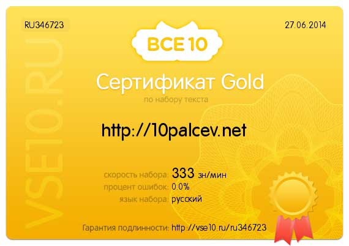 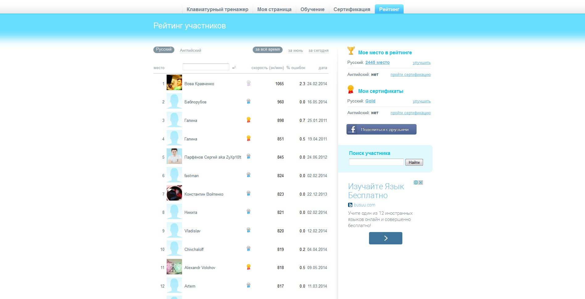 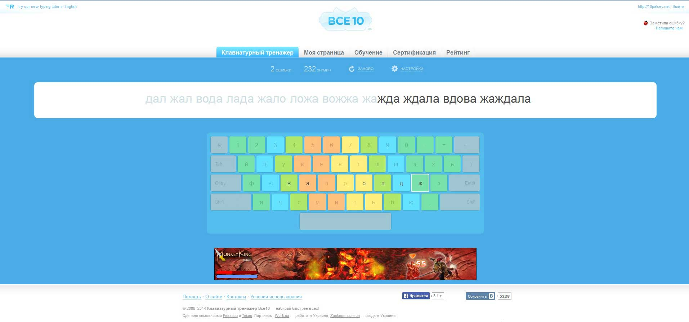
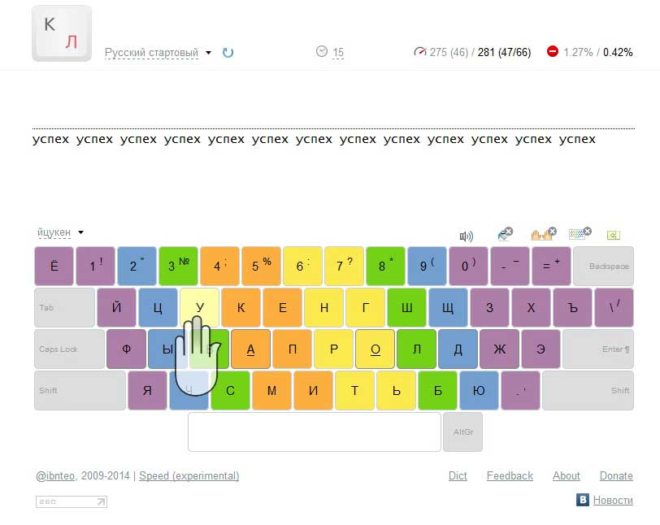
Приятный простой клавиатурный онлайн тренажер.
Можно обучатся на разных языках, много словарей, для программистов, частотный словарь и другие.
Ничего лишнего, только эффективное обучение.
Существует множество версий. Перейти к последней версии...
Возможности клавиатурного тренажера:
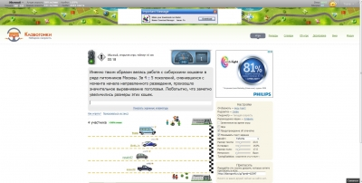
Клавогонки это онлайн тренажер в виде игры. Для обучения с нуля пригоден, в нем есть обучение, возможность ставить словари для обучения, но лучше всего подходит для набора скорости. Очень посещаемый и социальный ресурс. Тексты берутся с загруженных пользователями книг, можно кое-что познать для себя.
Возможности:
Лучшие тренажёры-программы (ИМХО):
- Губка Боб учит печатать (именно благодаря ему я полюбил слепую печать, но английского там практически нет)
- VerseQ (программа платная, но хорошая; к тому же даю "репаки" (ВЗЛОМАННЫЕ, конечно)
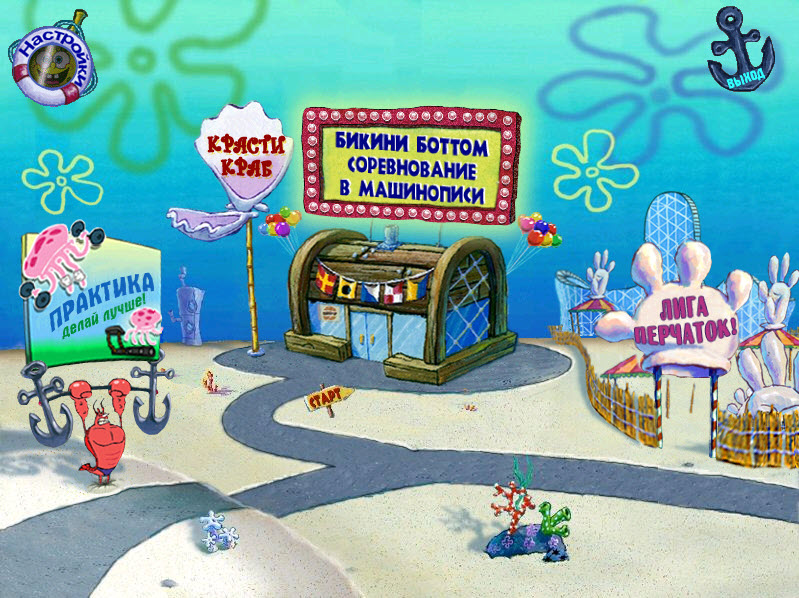 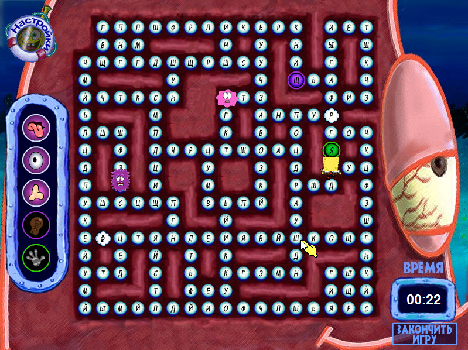 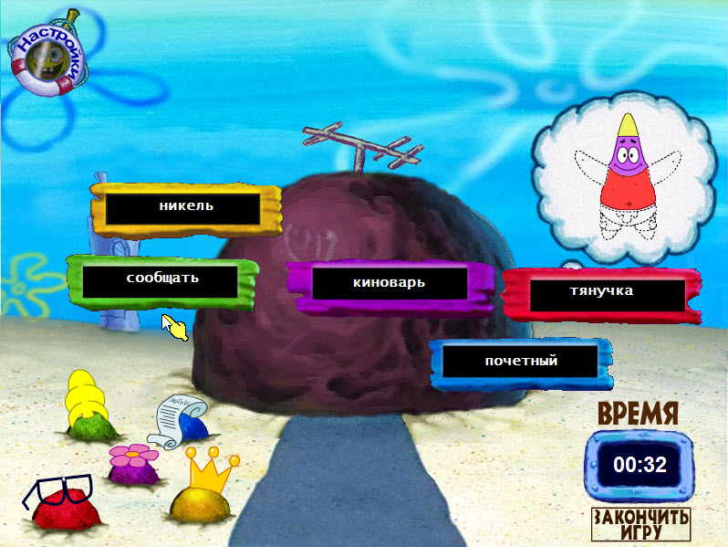 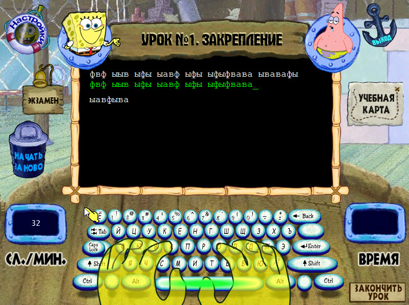 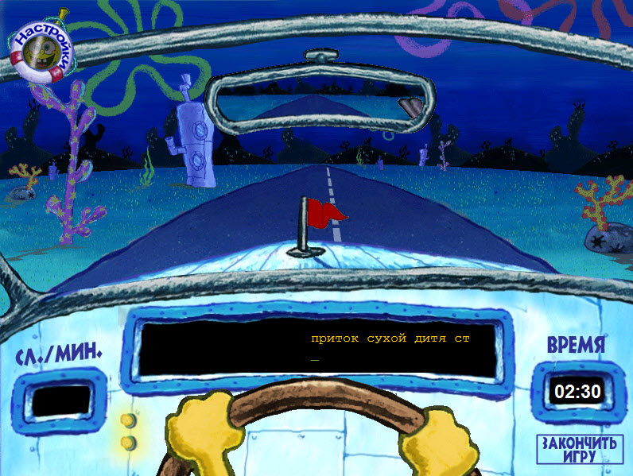 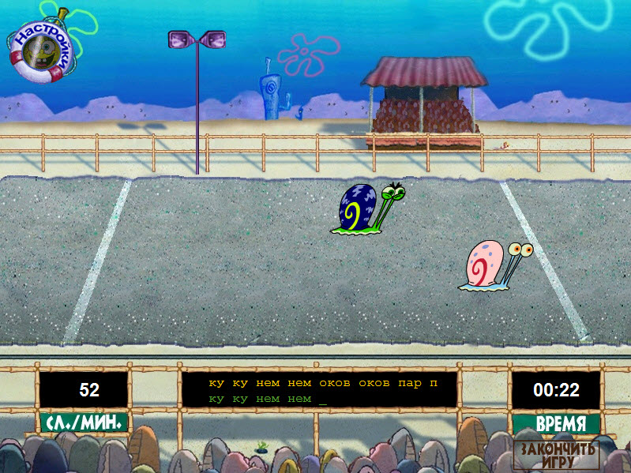
(ИСТОЧНИК ОПИСАНИЯ)
Год выпуска: 12 сентября 2008
Жанр: For Kids / Education
Разработчик: Riverdeep
Издательство: Руссобит-М
Платформа: PC
Тип издания: Лицензия
Язык интерфейса: русский
Язык озвучки: русский
Таблэтка: Не требуется
Системные требования:
• Операционная система: Windows 2000 / XP / Vista / 7 и 10 (у меня, по крайней мере работает)
• Процессор: Intel Pentium 350 MHz
• Оперативная память: 256 MB
• Видеокарта: GeForce 2
• Звуковая карта: совместимая с DirectX® 9.0с
• Свободное место на жестком диске: 500 MB
Описание:
Свершилось! Губке Бобу подарили новый компьютер! Казалось бы, самое время запустить захватывающую "стрелялку" и полностью окунуться в мир назойливых монстров и мощных пушек. Но наш герой решает использовать машину более эффективно – Губка Боб учится печатать! Его уникальный игровой тренажер поможет ребятам легко освоить метод быстрой печати, а любимые мультяшные герои сделают процесс обучения веселым и интересным. Ну, кто быстрей?
Особенности игры:
• Программа тренирует важнейшие навыки печати на компьютере
• Отличная 3D-графика и пошаговая помощь в освоении уроков
• Различные учебные методики для пользователей всех возрастов
• Учебные мини-игры с Губкой Бобом, Патриком и другими персонажами любимого мультфильма
• Система учета результатов обучения поможет в достижении поставленной цели
Скачивайте, устанавливайте и пользуйтесь на здоровье!
VerseQ 2011.2.23.226 (RePACK by LRepacks)
VerseQ 2011.2.23.226 (Special repack by Demian_Wolf)